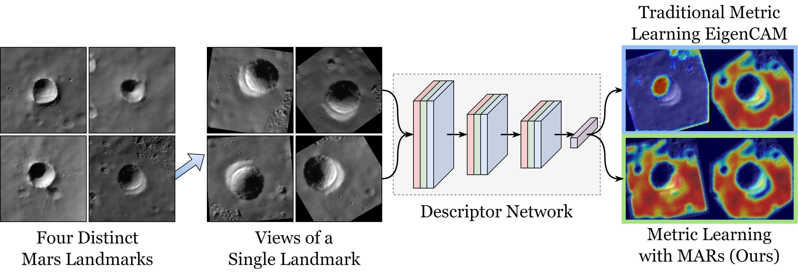

MARs: Multi-view Attention Regularizations
for Patch-based Feature Recognition
of Space Terrain
ECCV 2024
(European Conference on Computer Vision)
Paper
Supplementary
Code
Luna-1 Dataset

Patch-based features of space terrain exhibit extreme inter-class similarity and varying multi-view observations, which is difficult for metric learning to discern where attention focus is disparate. We propose Multi-view Attention Regularizations (MARs) to alleviate this issue and drive the attention of arbitrary viewpoints together.